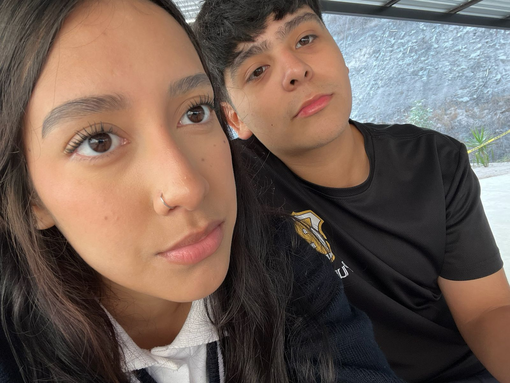

AD Luxe Makeup
¿BUSCAS MAQUILLAJE DE BUENA CALIDAD? Bienvenidos a nuestra página web de maquillaje, un espacio creado para todas las personas que aman resaltar su belleza, expresar su estilo y descubrir nuevas tendencias. Aquí encontrarás inspiración, consejos, productos y tutoriales pensados para ayudarte a sentirte segura y auténtica en cada ocasión. Creemos que el maquillaje no solo transforma el rostro, sino también la confianza. Por eso, compartimos contenido moderno, fácil de seguir y adaptado a todos los niveles, desde principiantes hasta amantes expertas del maquillaje. Nuestro objetivo es ayudarte a encontrar los colores, técnicas y productos que mejor reflejen tu personalidad. En nuestra página podrás descubrir looks naturales, glamorosos, elegantes y creativos, además de recomendaciones de productos, tips de cuidado de la piel y novedades del mundo de la belleza. Cada publicación está hecha con dedicación para inspirarte y acompañarte en tu rutina diaria. Gracias por formar parte de esta comunidad donde la belleza se vive con creatividad, confianza y pasión. Esperamos que disfrutes cada contenido y encuentres aquí tu lugar favorito para aprender, inspirarte y brillar.